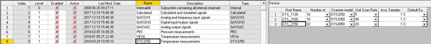

How To - Add a DTS3250/DTS4050 Temperature Scanner
This How To describes the required steps to add a DTS3250/DTS4050 temperature scanner to the proDAS system.
When a new DTS3250/DTS4050 temperature scanner is being added to the proDAS system, the IP address for the scanner needs to be entered in the Linux PC hosts file.
To Add a DTS3250/DTS4050 Temperature Scanner
- Login to the Linux PC as the root user and use a text editor (nedit, gedit or vi) to open the /etc/hosts file for editing.
- Scroll down in the file to where the Real-Time Network IP addresses are defined.
- Search for any previously defined temperature scanners.
Normally the host name for a DTS3250/DTS4050 temperature scanner has the following naming convention:
DTS_<serial_number>
If the serial number for the temperature scanner is 2150, then the host name would be entered as DTS_2150. A previously unused IP address must be allocated to the scanner.
- Review the currently allocated IP addresses in the hosts file for all the devices on the Real-Time Network and select one that is not assigned to any device.
- Using an example of an unallocated IP address of 172.29.18.24, the following line would be added to the /etc/hosts file in the same location where the previously defined temperature scanners are found:
172.29.18.24 DTS_2150
- Save the /etc/hosts file and logout of the Linux PC.
- On the MgtGUI PC, launch an instance of the Subsystem Editor.
- Select the DTS3250 Subsystem. A list of the currently defined temperature scanners is displayed on the right-hand side.
- Right-click on the right-hand side and select the Append option to add a new scanner.
- In the Host Name field, enter the same host name that was entered in the /etc/hosts file.
- Enter the remaining information based on the type of scanner that is being added – number of channels (16, 32, 64), scanner model (DTS3250/DTS4050), unit scan rate, average samples and, default EU.

- Save the changes in the Subsystem Editor. You can now add DTS channels in the Channel Editor and assign them to this new temperature scanner.